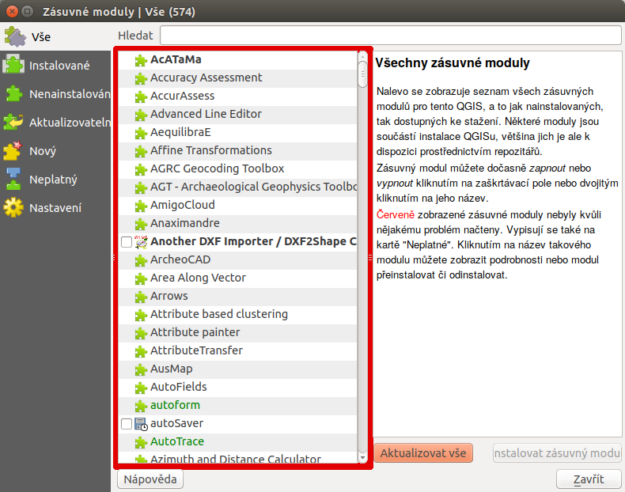
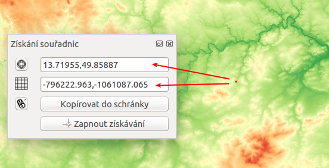
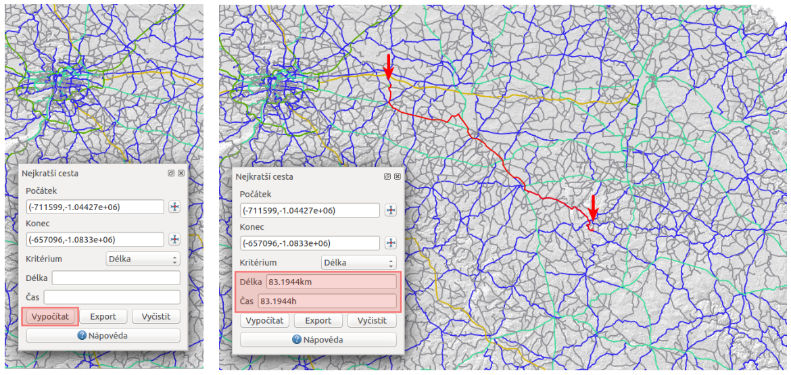

QGIS umožňuje práci se zásuvnými moduly, tzv. pluginy. Ve všeobecnosti se
jedná o software, které nepracuje samostatně, ale jako doplňkový modul jiné
aplikace a tím rozšiřuje její funkčnost. V současnosti existuje pro QGIS víc než
300 zásuvných modulů. Všechny jsou napsané v programovacím jazyku Python nebo C++. Mnohé z nich jsou
stále ve vývoji. Jejich kompletní seznam spolu s příslušnou charakteristikou,
informacemi například o použití, potřebné minimální verzi QGISu, domovské
stránce, autorech, o počtu stáhnutí, o tom, které jsou označené jako
nejoblíbenější je dostupný zde.
Moduly jsou udržované vývojovým týmem QGISu (QGIS Development Team) a jsou
automaticky součástí každé jeho distribuce. Externí pluginy jsou
napsané v programovacím jazyce Python a jsou udržovány příslušnými
autory. Chyby, angl. bugy v modulech by měly být zveřejnovány a
dostupné na stránkách projektu.
V prvním kroku v menu zvolíme Zásuvné moduly ‣ Spravovat a instalovat
zásuvné moduly, ikona .
Spustí se dialogové okno (Obr. 190), které slouží k prohlížení, vypínání a
zapínání dostupných modulů příslušné verze QGISu.

Obr. 190 Správce zásuvných modulů v prostředí QGIS.¶
Pod položkou Instalované najdeme ty, které byly
nainstalované automaticky při instalaci QGISu. Z nich jsou některé načtené, jiné
lze dočasně povolit nebo zakázat zaškrtnutím ikonky .
V případě, že klikneme na některý z modulů, zobrazí se jeho charakteristika nebo
účel, spolu s dalšími informacemi jako je název, popis, počet hodnocení a
stáhnutí modulu, reprezentující ikona, kategorie, instalovaná nebo dostupná
verze, autor, seznam změn a další. Na Obr. 191 je znázorněný příklad
zásuvného modulu s názvem Qgis2threejs.
Obr. 191 Charakteristika zásuvného modulu na prohlížení 3D objektů ve webovém
prohlížeči.¶
Seznam všech dostupných pluginů je možno zobrazit a konkrétní modul načíst zvolením
Nenainstalováno a spuštěním Instalovat zásuvný modul.
Následně se dá tento modul přeinstalovat nebo úplně odinstalovat
(Obr. 192).
Obr. 192 Seznam nenainstalovaných modulů (1), instalace (2),
možnost odinstalování (3) nebo přeinstalování (4)
kteréhokoli z modulů.¶
Pod záložkou Aktualizovatelný se nachází zásuvné moduly,
které jsou dostupné i v novější verzi. Záložka Nastavení obsahuje nastavení týkající se kontroly aktualizací modulů,
experimentálních a neschválených modulů a zobrazuje i seznam repozitářů, které
lze přidávat, editovat nebo mazat, viz Obr. 193.
Po zaškrtnutí políček při položkách Zobrazit také
experimentální a neschválené moduly je k dispozici téměř 500 zásuvných
modulů.
Obr. 193 Záložky související s aktualizacemi a nastavením zásuvných modulů.¶
Tip
Seznam zásuvných modulů může uživatel uspořádat dle svých potřeb.
Po stisknutí pravého tlačítka myši v seznamu modulů je k dispozici jejich
uspořádání dle abecedy, počtu stáhnutí, hlasů nebo stavu (Obr. 194).
Je zapotřebí připomenout, že zásuvné moduly v oficiálních repozitářech
byly testovány, nicméně jednotlivé repozitáře mohou obsahovat i méně ověřené
moduly různé kvality a stadia vývoje. Proto je dobrou pomůckou zobrazení
hodnocení či počtu .
Tip
Pokud známe alespoň přibližný název konkrétního modulu, při vyhledávání
může pomoci vyplnění políčka Hledat v dialogovém okně.
V případě, že máme k dispozici soubor AutoCAD DXF (Drawing Exchange Format), do prostředí programu QGIS ho
umíme načíst buď přímo přes GDAL/OGR, pokud však import nedopadne podle očekávání
pak je možné využít zásovný modul Another DXF Importer. V předchozích verzích byl
dostupný také modul Konvertor Dxf2Shp, ten se však již dále nevyvíjí.
Obr. 195 Dialogové okno modulu pro import AutoCAD DXF souboru.¶
Po načtení modulu ze správce zásuvných modulů
se po kliknutí na ikonu objeví dialogové okno, kde je zapotřebí
nastavit vstupní *.dxf soubor, název, cestu a typ nového *.shp
souboru nebo GeoPackage.
Poznámka
Pokud se po spuštění modulu tlačítkem OK zobrazí dialogové
okno související se souřadnicovými systémy, systém nastavíme.
Tento zásuvný modul se používá velmi jednoduše a umožňuje zobrazení
souřadnic myši pro dva vybrané souřadnicové systémy. Dialogové okno je
zobrazeno na Obr. 196. Kliknutím na ikonu
nastavíme požadovaný souřadnicový systém, zvolením Zapnout
získávání se symbol myši změní na . Po kliknutí do mapového
okna se objeví malá červená tečka. Její souřadnice v souřadnicovém systému
projektu se zobrazí v okně vedle symbolu . Na Obr. 196
jsou na ukázku zobrazené souřadnice vybraného bodu v souřadnicových
systémech s EPSG 4326 (WGS 84) a 5514 (S-JTSK (Greenwich) / Krovak East North).
Ikona umožňuje souřadnice kopírovat do schránky v
podobě čtyř hodnot (pro Obr. 196 by to bylo
13.71955,49.85887,-796222.963,-1061087.065).

Obr. 196 Dialogové okno modulu na zobrazení souřadnic z mapového okna.¶
Poznámka
Pro novou verzi QGIS byl tento modul portován a aktuálně není
přeložen do češtiny. Funkcionalita však zústává v zásadě stejná.
Ve vrstvě polylinií modul vypočte a následně vykreslí nejkratší cestu mezi dvěma
zvolenými body. Je napsaný v programovacím jazyku C++. Umožňuje určit
optimální trasu na základě délky nebo času. Výsledek je automaticky
exportován jako nová vektorová vrstva.
Poznámka
Při výpočtu nejkratší cesty se doporučuje nastavit souřadnicový systém
projektu dle souřadnicového systému vrstvy polylinií.
Zásuvný modul aktivujeme v panelu správce zásuvných modulů. V liště menu přejdeme na Vektor ‣
Silniční graf ‣ Nastavení. Zobrazí se okno, kde vyplníme základní nastavení
jako jednotku času, vzdálenosti, topologickou toleranci a další, viz
Obr. 197. Na nastavení modulu použijeme vektorovou vrstvu cest České
republiky zobrazenou na Obr. 198 dle typu.
Obr. 197 Nastavení zásuvného modulu cestného grafu.¶
Obr. 198 Silnice České republiky zobrazené dle jejich typu.¶
V panelu Nejkratší cesta použijeme a v mapovém okně kliknutím zvolíme
počáteční a koncový bod cesty. Zobrazí se jako zelená, resp. červená tečka.
Následně nastavíme kritérium, t.j. délku nebo čas a potvrdíme stisknutím
Vypočítat. Po proběhnutí výpočtu se v mapovém okně zobrazí výsledek v
podobě polylinie, která se dá exportovat jako nová vektorová vrstva (použitím
Export). Tlačítko Vyčistit slouží na smazání obsahu políček.
Postup je znázorněný na Obr. 199.

Obr. 199 Použití zásuvného modulu síťových analýz a výpočet nejoptimálnější cesty.¶
Tip
Pokud nevidíme panel Nejkratší cesta, přidáme ho z menu lišty
Zobrazit (Zobrazit ‣ Panely ‣ Nejkratší cesta),
jak je to znázorněno na Obr. 200.
Obr. 200 Zobrazení dialogového okna na výpočet nejkratší cesty.¶
Poznámka
Tento modul je možno nahradit interním algoritmem, který je dostupný
mezi nástroji zpracování.
Obr. 201 Dialogové okno algoritmu pro hledání nejkratší cesty.¶
Pomocí tohoto zásuvného modulu je možné připojovat různé mapové služby
postavené na protokolech XYZ nebo WMS. V základním nastavení jsou např.
Open Street Map. Je však možno přidat další a také vyhledávat dle pozice.
K dispozici jsou např. i mapy.cz.
Se zásuvným modulem začneme pracovat tak, že z
menu jako Web ‣ QuickMapServices ‣ ??? vybereme zdroj, který nás zajímá.
Obr. 202 Použití zásuvného modulu Quick Map Services¶
GeoData CZ/SK Plugin (Zásuvné moduly ‣ GeoData ‣ Procházet datové zdroje)
umožňuje přidávat do mapového okna množství dat z oblasti České a SLovenské republiky
obrazových služeb z XYZ a WMS zdrojů a také jiných typů zdrojů
Na Obr. 204 je dialogové okno pluginu.
RUIAN Plugin umožňuje přidávat do mapového okna dat z registru RÚIAN
(Registr územní identifikace, adres a nemovitostí).
Na Obr. 205 je dialogové okno pluginu.
{kind=link}
 .
V případě, že klikneme na některý z modulů, zobrazí se jeho charakteristika nebo
účel, spolu s dalšími informacemi jako je název, popis, počet hodnocení a
stáhnutí modulu, reprezentující ikona, kategorie, instalovaná nebo dostupná
verze, autor, seznam změn a další. Na Obr. 191 je znázorněný příklad
zásuvného modulu s názvem
.
V případě, že klikneme na některý z modulů, zobrazí se jeho charakteristika nebo
účel, spolu s dalšími informacemi jako je název, popis, počet hodnocení a
stáhnutí modulu, reprezentující ikona, kategorie, instalovaná nebo dostupná
verze, autor, seznam změn a další. Na Obr. 191 je znázorněný příklad
zásuvného modulu s názvem  Qgis2threejs.
Qgis2threejs.{kind=link}

{kind=link}

{kind=link}
{kind=link}

 Another DXF Importer¶
Another DXF Importer¶{kind=link}
{kind=link}
 nastavíme požadovaný souřadnicový systém, zvolením Zapnout
získávání se symbol myši změní na
nastavíme požadovaný souřadnicový systém, zvolením Zapnout
získávání se symbol myši změní na  . Po kliknutí do mapového
okna se objeví malá červená tečka. Její souřadnice v souřadnicovém systému
projektu se zobrazí v okně vedle symbolu . Na Obr. 196
jsou na ukázku zobrazené souřadnice vybraného bodu v souřadnicových
systémech s EPSG 4326 (WGS 84) a 5514 (S-JTSK (Greenwich) / Krovak East North).
Ikona
. Po kliknutí do mapového
okna se objeví malá červená tečka. Její souřadnice v souřadnicovém systému
projektu se zobrazí v okně vedle symbolu . Na Obr. 196
jsou na ukázku zobrazené souřadnice vybraného bodu v souřadnicových
systémech s EPSG 4326 (WGS 84) a 5514 (S-JTSK (Greenwich) / Krovak East North).
Ikona  umožňuje souřadnice kopírovat do schránky v
podobě čtyř hodnot (pro Obr. 196 by to bylo
umožňuje souřadnice kopírovat do schránky v
podobě čtyř hodnot (pro Obr. 196 by to bylo
{kind=link}
 Zásuvný modul síťových analýz¶
Zásuvný modul síťových analýz¶


 Quick Map Services¶
Quick Map Services¶
{kind=link}
{kind=link}